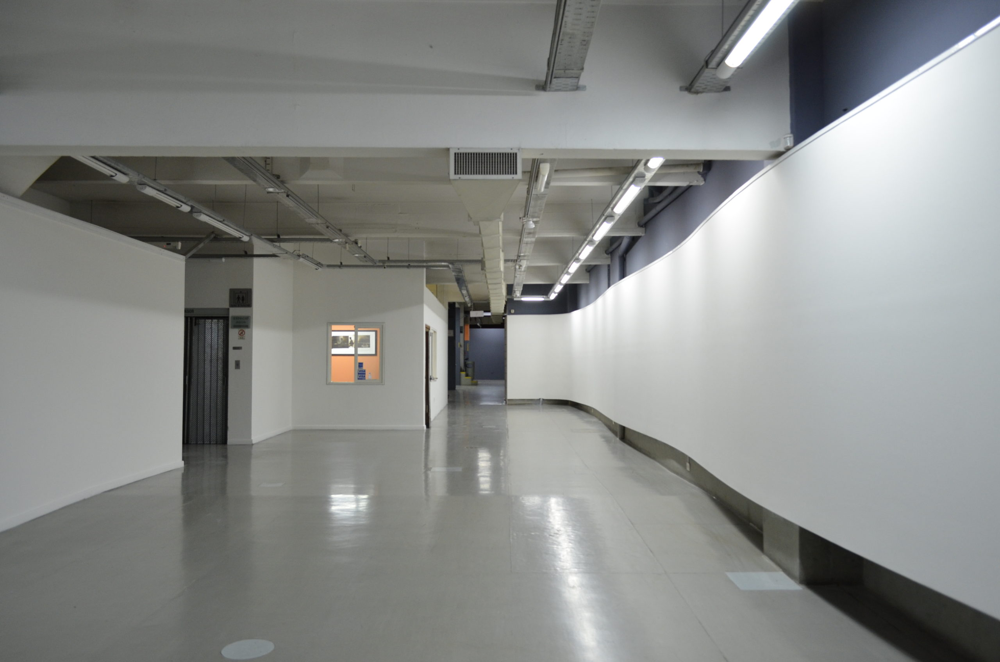
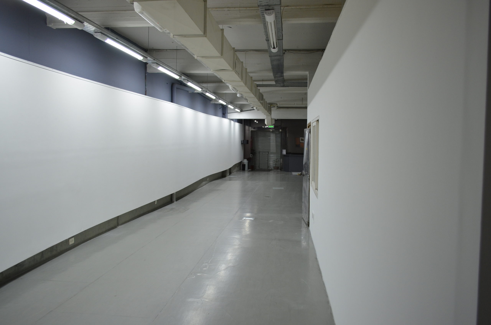

Galería de nuestro espacio



A partir de una intensa labor desde su origen, ArtexArte se ha convertido en un espacio de referencia, tanto a nivel local como internacional, a partir de su propuesta pionera en torno a la fotografía y de la vinculación entre esta y las nuevas tecnologías de producción artística contemporánea.
Esta perspectiva de trabajo se configura, de manera efectiva, a través de diversos programas cuyos contenidos se brindan de manera articulada: exhibiciones (con prestigiosos curadores y artistas nacionales e internacionales); educativo (para estudiantes de escuelas medias y de instituciones terciarias y niversitarias); de formación (ciclos de charlas, encuentros internacionales, presentación de libros, cursos, revisiones de portfolio, etc.); un programa editorial y, desde 2008, un premio anual de fotografía que ya cuenta con siete ediciones.
Las actividades generadas por ArtexArte activan una amplia red de alianzas estratégicas interinstitucionales, tanto públicas como privadas, nacionales e internacionales, tendientes a sinergizar las propuestas y el debate en torno a problemáticas afines.
Esta labor se lleva a cabo en la sede de 1800 m2 estructurado en tres niveles con múltiples salas de exposiciones, sala de video, sala de lectura, una biblioteca especializada y sala de conferencias. Y es un espacio sostenido desde sus inicios por la Fundación Alfonso y Luz Castillo.